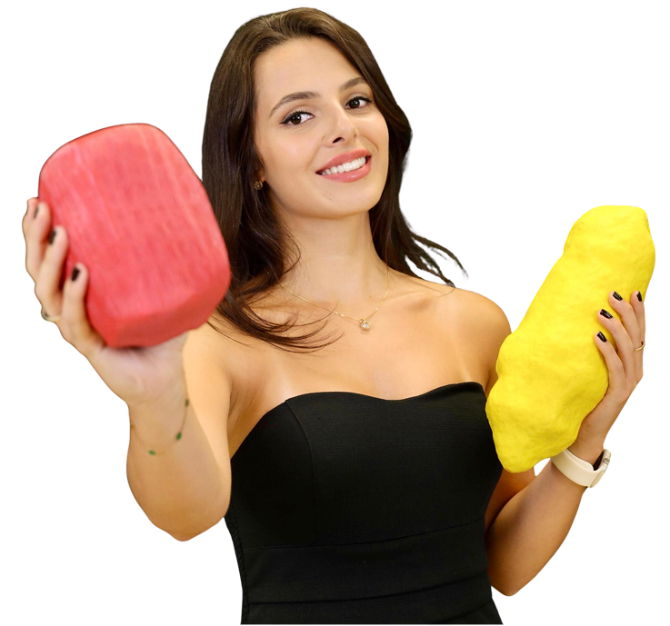
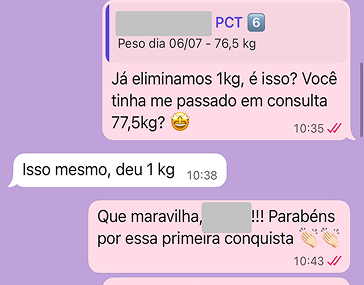
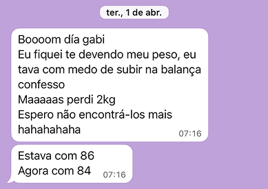
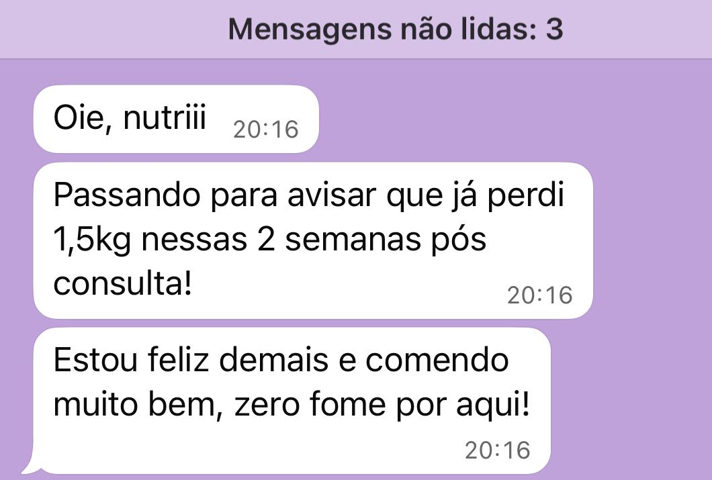

Acompanhamento nutricional personalizado, sem dietas radicais nem modismos. Você aprende a comer bem, a ter prazer nas refeições e a conquistar o corpo que sempre quis de forma leve e definitiva.
Atendimentos presenciais em Caieiras e região ou online no mundo todo!
QUERO TRANSFORMAR MEU CORPO COM SAÚDEAs dietas são restritivas demais e você acaba desistindo.
O peso até baixa, mas logo volta e com juros.
Não sabe mais o que pode comer sem culpa.
Está cansada de começar e parar no meio do caminho.
É o método que precisa ser feito para você, não contra você e eu posso te ajudar!
INICIAR ACOMPANHAMENTO AGORAEsqueça as dietas da moda, os "projetos verão" e os planos de gaveta.
Meu acompanhamento é individualizado e estratégico,
feito para pessoas reais, com rotinas reais e desafios reais.
Quais são as etapas do acompanhamento?

CRN-3 89530/P
Sou nutricionista formada pela Universidade Federal de São Paulo, com pós-graduação em Emagrecimento e Hipertrofia, além de formações complementares na área. Meu trabalho tem como foco um atendimento leve, sustentável e livre de terrorismo nutricional.
Aprendi que emagrecer vai muito além de seguir dietas restritivas ou contar calorias, é sobre transformar a relação com a comida, desenvolver novos comportamentos alimentares e resgatar a autoestima. Acredito que uma alimentação equilibrada e prazerosa é capaz de transformar vidas.
Já ajudei diversas mulheres a alcançarem um emagrecimento leve, saudável e duradouro. Agora, quero ajudar você a conquistar o mesmo!
Confira as respostas das perguntas frequentes ou entre em contato comigo.
O melhor momento para recomeçar é agora. E com cuidado, com estratégia, com acompanhamento — e sem se anular no processo.
SIM, EU QUERO EMAGRECER COM LEVEZA!Veja o que outras mulheres dizem sobre esse processo:


